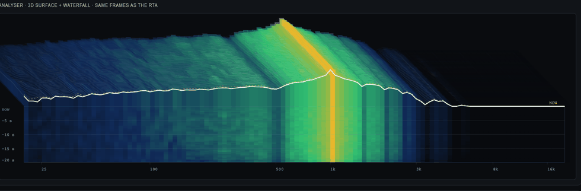
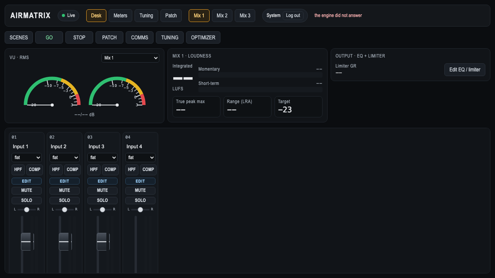
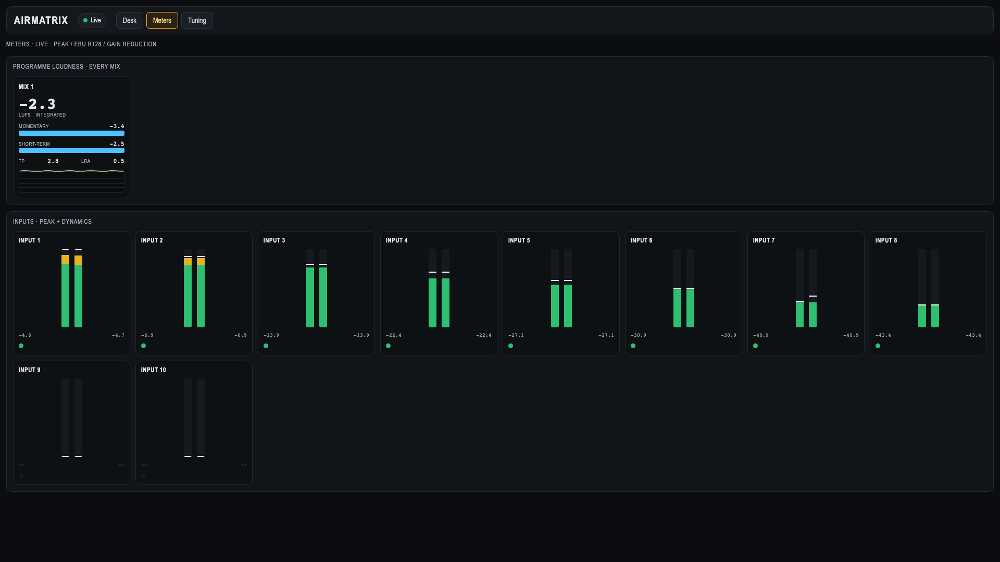
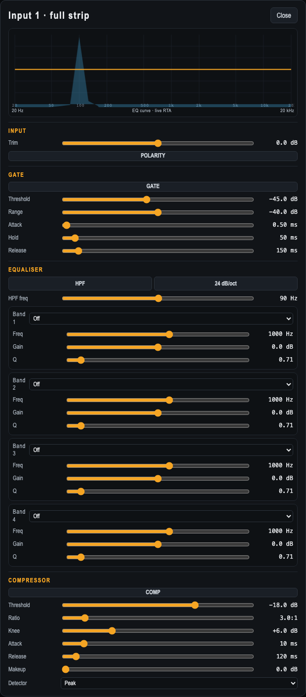
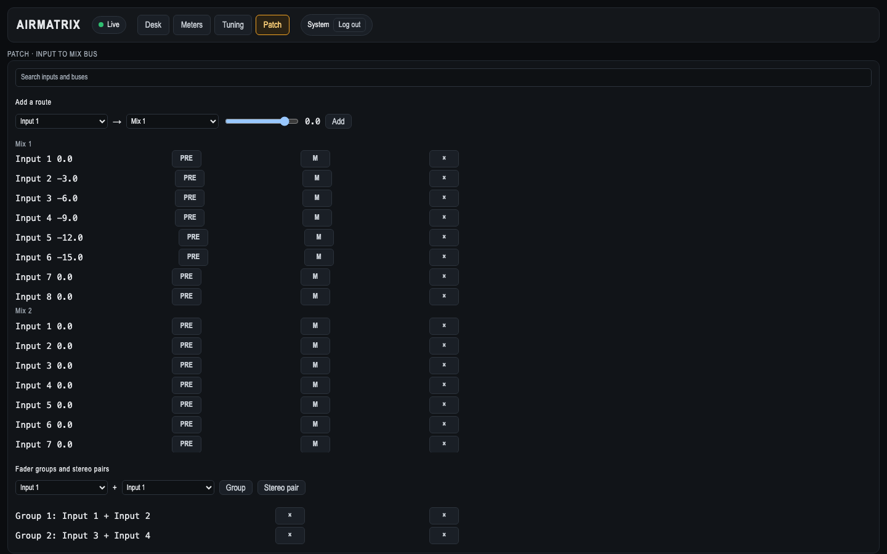
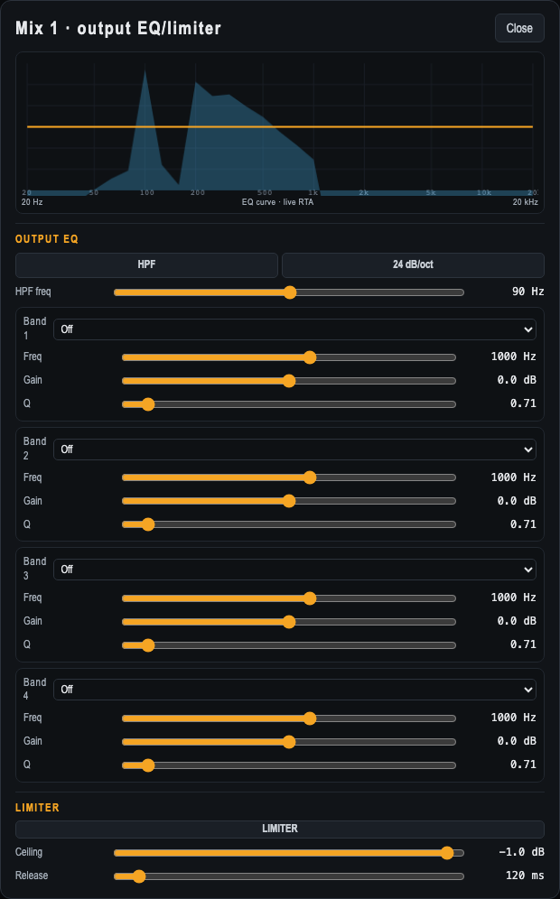
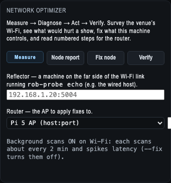

PROLOGUE
“So — what have you done?”
It’s the question that keeps coming back. And behind it, a bet most people wouldn’t take:
One person. A phone. An AI assistant. No team, no data center, and less than $1,000 of cash. Can you build real things — software, an operating system, a physics engine — by directing an AI instead of coding, as long as you never believe anything until a test could have proven it wrong?
This is the story of that bet: the research, the development, and the discoveries along the way.
CHAPTER 01 — THE METHOD
A claim you can’t break isn’t a fact.
It’s a hope.
Every project in this story hangs off one discipline:
A claim only counts when the test that could kill it has actually failed. You say what you believe. You build the test that would prove you wrong. You show the test can fail. Then — and only then — you watch it pass.
Four words carry the whole thing:
Think of it as a food-safety label for ideas. Before you’re allowed to say “this works,” you have to show the experiment that would catch it lying — and prove that experiment actually catches liars.
✓ VERIFIED each breakage is on file, each guard mutation-tested so it can fail.
And here’s the rule you’ll see on every page of this story — the stamp system:
- ✓ VERIFIED measured, and a stranger could re-run it.
- ◆ BUILT it works — not yet proven under real load.
- ✦ VISION where this is heading. A hope, said out loud.
When a claim is a hope, it says so. That honesty is the whole point — it’s what makes the real stuff believable.
CHAPTER 02 — MORPHEUS
Describe the software you want.
Then own what you get.
Morpheus is a digital possibility engine. You describe an app in plain words; Morpheus plans it, codes it, reviews its own work, builds it and deploys it. The code is yours, in your own repo — it doesn’t vanish when you stop paying.
An honest meter shows the cost before the work runs, never after. And there’s Jarvis — a life-assistant built first for its maker, designed for the way a busy mind actually works: it holds what a distracted memory drops.
It’s not a demo. A real music shop — valiantmusic.com.au — runs on it, with a plugin that keeps the site healthy, owns its search ranking, and even carries a “clean my site” button. ◆ BUILT
And the honest scale, because it matters:
✓ VERIFIED a working system with one real user. A start — not a claim of scale.
CHAPTER 03 — THE MESH
You don’t need a data center.
You need a plan.
No server room. No cloud bill. Just a few spare machines — a Mac, a Windows laptop, a handheld gaming PC — each running its own AI agent, talking to each other through a plain git repo. Pull is the inbox. Push is the send button.
A live board shows the whole rig at a glance. And the rule that keeps it honest: when a machine can’t do a job, that’s not a wall — it’s a build task. The rig grows its own capabilities.
One person, acting like a small fleet. The machines do the work; the human does the thinking.
✓ VERIFIED the mesh is live today — the board is at 100.90.120.32:8081 (Tailscale).
CHAPTER 04 — MORPHEOS
A computer that refuses
to stay broken.
MorpheOS is an operating system where “never breaks, heals itself” isn’t a slogan — it’s a mechanism.
The heart of it is a trial boot: a new version tries once. If it’s unhealthy, the machine falls back to the version that worked — automatically. And that mechanism is genuinely proven in CI, including the crash case most people forget. ✓ VERIFIED
Files are found by meaning, not just by name. Every change is undoable. And there’s a hardened edition — MorpheOS-Secure — where every claim carries the attack that was run against it, and it’s allowed to be awkward to use, because its buyer has something to lose. ◆ BUILT
Everyday version: your computer keeps the version that works — and can prove it.
CHAPTER 05 — AIRMATRIX
The claim is latency.
The proof is a measurement.
AirMatrix is broadcast-grade wireless audio for live events. The whole problem is one number: how long does sound take to travel? And that number can’t be claimed — it has to be measured.
First measurement: an 8.000 ms round trip, measured on a loopback — with the honest caveat that real hardware hasn’t been tested yet. ✓ VERIFIED on loopback
And they proved something even more useful: a virtual machine can’t measure timing — hundreds of xruns in a single run — so any “latency” number from a VM is fake by definition. The instrument gets the same skepticism as the claims. ✓ VERIFIED
Every claim is built with its own killer. The sharpest one: “A lab that has never refused anything is not measuring.” When EQ can’t fix a room, AirMatrix will tell you so — the opposite of the sales motion. ◆ BUILT
The 3D analyser — live

It’s real — here’s the screen






And the future of it: the mixing-desk brain — a fader on a MIDI controller produces a measured audio change, with a latency number attached. ✦ VISION
CHAPTER 06 — PACLAND · THE CLIMATE
We pointed the engine at the Earth.
It found a leak.
pacland was built to check the string landscape — the theory that might unify all of physics. But first, the engine took a detour through the Earth, because the world’s climate models are the biggest predictions we have. And the engine found something.
The models leak energy. Check the books — a model in a world with no forcing should be perfectly still:
- 10 of 19 leak energy,
- 2 of 19 leak ocean mass,
- 0 of 19 leak salt.
Salt lives only in the ocean; the other two cross the air–sea boundary. That’s how you know where the bug is. ✓ VERIFIED
Heat leak, model by model
✓ VERIFIED a different test from the 10/19 ledger above — each bar is one model's energy-imbalance drift. Data: Irving et al. 2021, Loeb et al. 2021, redrawn not re-derived. red = leaking · blue = gaining · amber dashed = measured 0.77 W/m².
The repair: the field’s own drift-correction restores 19 of 19 models, and lands climate sensitivity at 3.08 K — right inside the observed 2.6–3.9 K band.
◆ BUILT this is a repair, not a takedown — and it doesn’t ship until a stranger who disagrees can try to break it. The credibility is in saying what isn’t proven.
CHAPTER 07 — THE QUANTUM ARM
The rules of the quantum world,
turned into proofs.
SEXTANT is a yes/no engine running on a simulated quantum computer called Phantom. For each claim it reads whether the answer is FORCED (proven), FREE (still open) or IMPOSSIBLE (ruled out).
The famous rules of quantum mechanics — Bell’s theorem, the Tsirelson bound of 2√2, no-cloning — are now proofs in Lean, a proof assistant. A proof that isn’t true won’t compile. ✓ VERIFIED
And there’s a clean boundary: a “quantum computer” built on regular hardware can run exactly the stabilizer class — the part that gives no speedup. The actual quantum speedup lives in the rest. That boundary is now machine-checked. ✓ VERIFIED
And the geometry behind entanglement gets its own picture: the MERA causal cone is a hyperbolic ball — exponential volume, logarithmic depth, and the area law, drawn as a 3D object you can spin.
Pointed at the deepest problem — quantum gravity — the engine reads a constraint-first theory: gravity must be quantum, a classical coupling is ruled out. And the SEXTANT board scores six candidate frameworks against thirteen conditions — KILLED / SURVIVES / UNKNOWN. ✓ VERIFIED, kernel-checked parts
It doesn’t claim to have solved quantum gravity. It claims to decide between candidates — and to say UNKNOWN when it can’t.
CHAPTER 08 — VVS · THE STANDARD
Make “done” mean “verified” —
for everyone.
The discipline that stopped 41 breakages was extracted and turned into a standard anyone can run against. VVS is the method, externalised: name a claim, build the falsifier, prove it can fail, publish the evidence.
The SDK is the product — it guarantees that what an AI coder produces actually works. The standard — VDS — aims to be a global mark, a food-safety label for software. And the certificates are signed and offline-verifiable, so a verdict can’t be quietly faked. ◆ BUILT
There’s even an Unambiguator: it turns vague instructions into clear, checkable ones — because an AI can only be held to account for something it actually understood. ◆ BUILT
CHAPTER 09 — ASK ALICE
A source isn’t a source
until you can point at the line.
Ask Alice is verified research for the people who write the world’s encyclopedia. Every claim traces to the actual line in the actual source — because a tertiary source like Wikipedia is a pointer, never a source.
It files verified research into a library that can be searched, queried and synthesised — finding correlations across thousands of documents that would take years by hand. And every synthesis is itself a claim, with a verdict and a falsifier. ◆ BUILT
The person writes. Alice verifies. Every sentence earns its citations.
✓ VERIFIED on a live test a claim was traced through the Golden Gate Bridge article to the underlying source — and the answer was UNKNOWN, because Wikipedia’s sentence wasn’t in the source. That honesty is the product.
CHAPTER 10 — THE FUTURE ✦ VISION
What happens when
“verified” is the default?
Everything from here is extrapolation — labelled as such. But the direction is already set:
- Software you own, not rent — described into existence by anyone, held forever.
- An operating system that heals itself — from a pocket Pi to a server fleet.
- A standard for “verified” that strangers can run, not just read about.
- A lab that certifies the physical world — audio, rooms, climate — one measurement at a time.
- Research that compounds — verified knowledge synthesised across every field.
That’s the vision. What’s real today is smaller and harder-won:
One person. Under a thousand dollars. A few machines. An AI. And a discipline that keeps asking — can you prove it?
One verified constraint at a time.